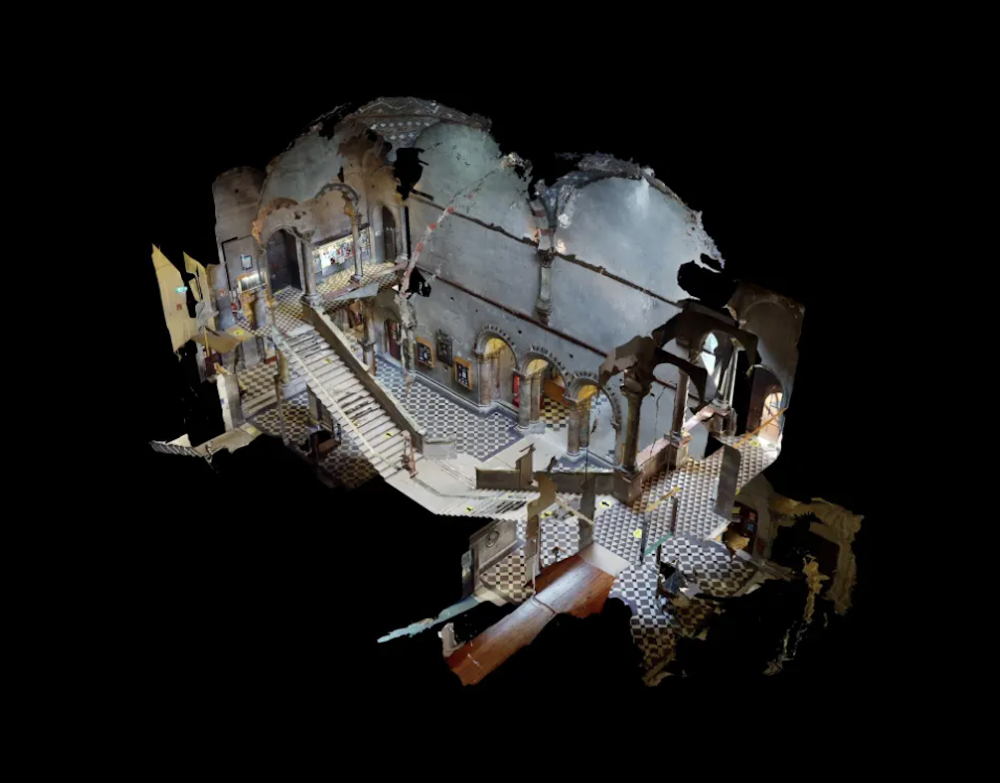

The Geography Building at Trinity College Dublin is constructed using a combination of traditional and modern materials, reflecting both its historical setting and functional purpose. The primary materials include:
- Limestone – A key structural and decorative element, widely used in Trinity’s historic buildings, giving the exterior a classic, durable appearance.
- Concrete – Used in later modifications and structural reinforcements, providing stability and longevity.
- Brick – Incorporated in parts of the building, adding warmth and texture to the facade.
- Timber – Found in flooring, staircases, and interior furnishings, offering a natural, warm aesthetic.
- Glass – Used in windows and modern extensions, allowing for natural light and an open atmosphere.
- Steel – Employed for structural support in renovations, ensuring the building meets modern safety standards.
The mix of historic materials like limestone and brick with modern reinforcements helps the Geography Building blend with Trinity’s architectural heritage while remaining a functional academic space.
